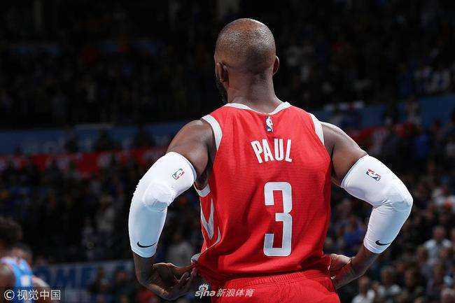

控卫之神
克里斯·保罗

生涯简介
克里斯·保罗（Chris Paul），1985年5月6日出生于美国北卡罗来纳州温斯顿-塞勒姆，美国职业篮球运动员，司职控球后卫。现效力于NBA休斯敦火箭队
2005年NBA选秀，保罗第一轮第4位被新奥尔良黄蜂队选中，2005-06赛季，获得NBA最佳新秀称号。2011年11月，克里斯·保罗加盟洛杉矶快船队。
2017年6月25日，宣布离开快船；6月28日，加盟火箭队。2018年7月8日，火箭宣布与克里斯·保罗正式完成续约。
邮箱：932257730@qq.com
电话：10086